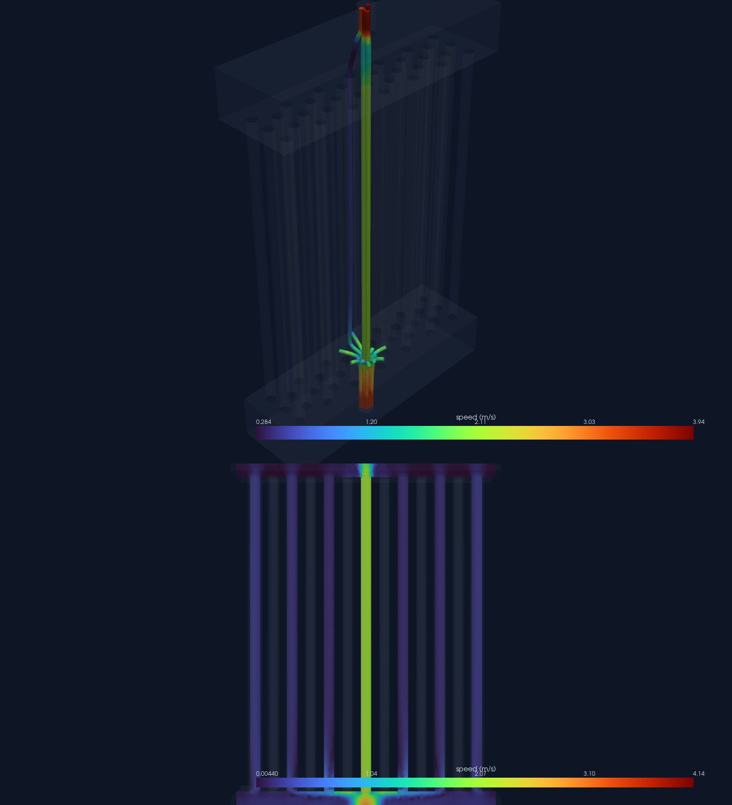
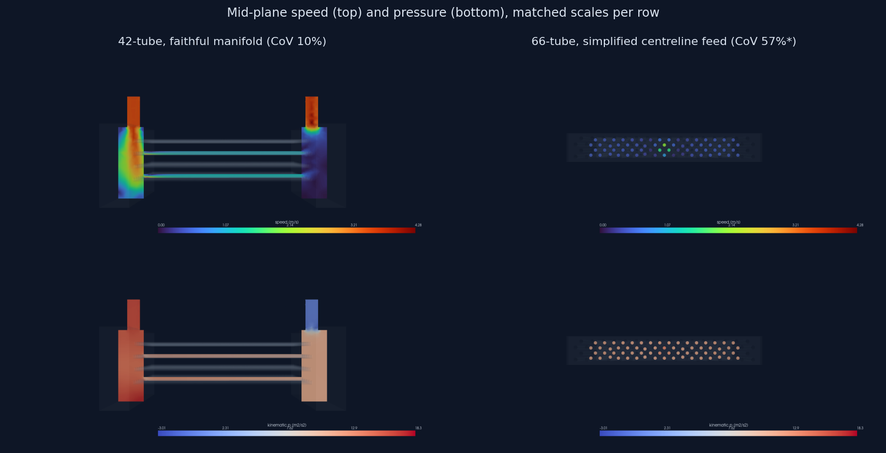
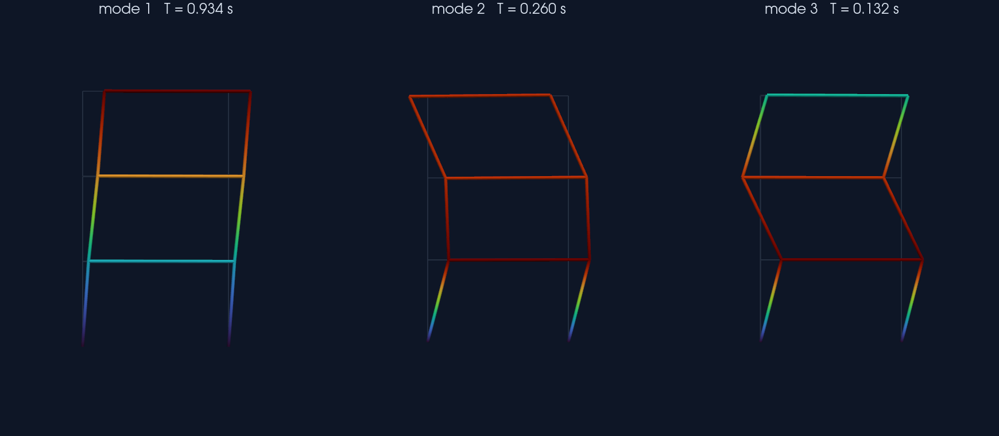

0.934 s
T1, MATCHES PROJECT 5
The dissertation's CoV numbers live in tables; these labs make them visible. All three render headlessly through the VTK pipeline that ParaView is built on, from the actual converged solver fields, and each ships a pvpython twin where it applies. A figure here is a claim, so the data is real or the lab does not ship.
The 33-tube condenser's flow CoV measured 131% in the research CFD, and this render shows what that number looks like: streamlines seeded from the actual inlet patch dive straight through the bundle center as a jet while the flanks sit stagnant, and the mid-plane speed slice confirms a single hot column. The 389,517-cell converged field is the real one from the dissertation package.

389,517 cells; inlet-patch seeded streamlines; peak interpolated speed 4.18 m/s
The craft lab: 42-tube and 66-tube manifold fields, 1.71 million cells combined, rendered as mid-plane speed and pressure slices with matched cameras and matched color ranges per row, so the eye compares physics instead of colormap artifacts. The 42-tube's even feed and the 66-tube's simplified centreline jet read instantly, caveat included.

42-tube: 769,447 cells, speed max 4.28 m/s; 66-tube: 944,081 cells, speed max 3.98 m/s; shared clim per row
Project 5's three-story frame rebuilt in OpenSees, eigensolved live, and its first three lateral modes rendered as warped, displacement-colored tubes over the ghosted undeformed frame. The first period lands at 0.934 seconds, identical to project 5's reported value because it is the same model solved again, and modes two and three come out at 0.260 and 0.132 seconds.

T1 = 0.934 s (matches project 5), T2 = 0.260 s, T3 = 0.132 s; unbraced frame, live eigensolve